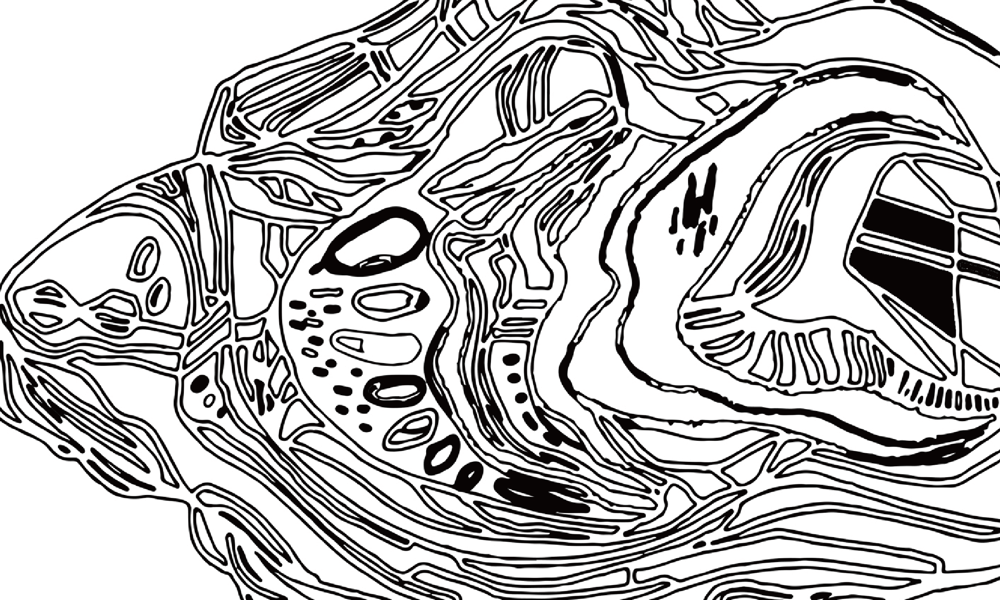
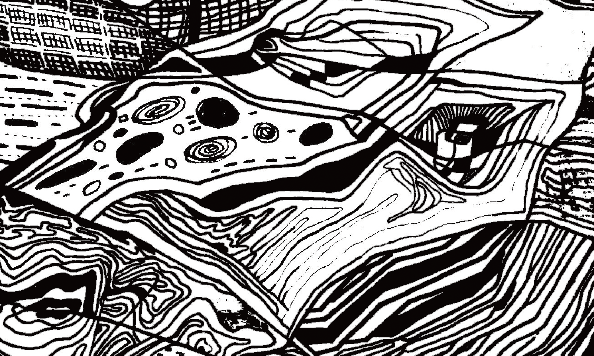

Welcome to the emotional manufacturer, where we craft every emotion into a masterpiece of its own. Whether it's sparking passion, gentle companionship, or profound introspection, we understand that emotions paint life's most vibrant hues. With meticulous care, we aim to help everyone discover their unique emotional vintage, enriching life with depth and resonance. From personal narratives to professional challenges and every twist in life's journey, at the Emotion Forge, we journey with you to forge the most precious emotional memories.
「The little things. There's nothing bigger, is there?」
In the Stage of Emotional Generation, raw feelings emerge, sparking the initial essence of the journey.
⎯⎯⎯⎯⎯⎯⎯⎯⎯⎯ step one

During the Stage of Fermentation, emotions evolve and mature, undergoing transformation and depth.
- step two -

In this stage, emotions integrate and nourish, fostering personal growth and resilience.
- step three -

::
Emotional relationships between people evolve constantly, both visibly and invisibly, from moment to moment and
day to day. Messages absorbed by the mind grow and ferment over time, embedding themselves in consciousness as
independent memories, shaping who we are today.
Human sensory memories often linger in the subconscious, with emotions often more powerful than memories of events
themselves. This project draws inspiration from the loss of a father, expressing personal emotional changes
through imagery. Confronting and fearing death, loss, memories, and the changes of new life, time often works its
invisible magic, transforming intense inner pain into fluctuating emotions of bitterness and tranquility.

::
"The thickness of lines expresses the flow of consciousness, while the brightness and darkness of colors convey
the exchange of emotions."
Starting from personal experiences, I express my emotional changes and fluctuations. I transform my emotions
and memories of pain, struggles, and settling into abstract lines and geometric images, complemented by
corresponding color schemes. The designed pieces are created as printed artworks that visually reflect the
fluctuations of emotions over time.

::
After countless struggles, balance within the scars is often found, crafting a transformed self.
In the end, the largest masterpiece is shaped into an island, transforming the island into oneself. Using
the aforementioned techniques and patterns, depict the self formed by layers upon layers of emotions.